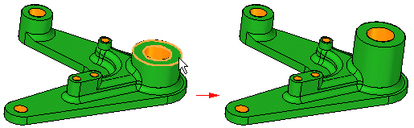
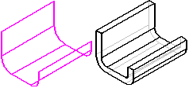
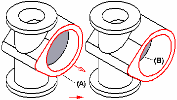
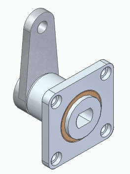
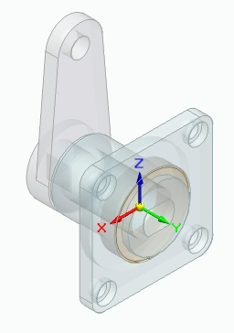
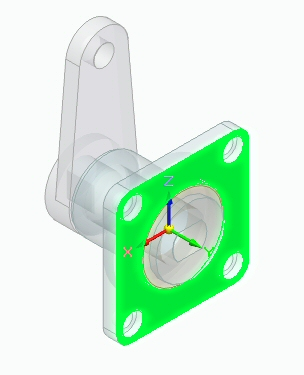
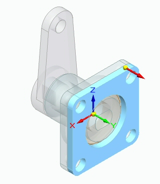
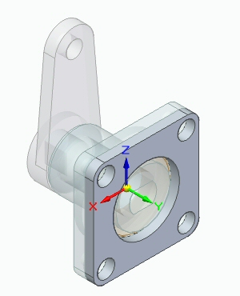

Thicken command
Thickens a part by offsetting one or more faces. You can use this command to construct a solid from a construction surface or to modify an existing solid. Instead of editing one or more features, you can use the Thicken command to add the necessary material to the solid model, and achieve the same result in less time.

A Thicken feature can be the base feature of a model.
Rather than create a solid from a construction surface, it is often easier and faster to create the mid-plane of the desired model, and then use the Thicken command.

You construct thicken features by selecting the faces you want to offset, and then specify the offset direction by positioning the cursor relative to the selected faces. When you add a thicken feature to a solid model, the faces adjacent to the face you are thickening are modified, but the other faces are not affected. For example, when you thicken the planar face (A), the faces that touch the thickened face are extended, but the face at the bottom of the cutout (B) maintains its original position.

Assembly in-context modeling
You can use the face of an adjacent assembly component to create new geometry when modeling in the context of an assembly. Thicken uses the face of a background part without creating an Inter-Part copy in a synchronous part.
Options:
-
Include Internal Loops
-
Exclude Internal Loops
-
Use Only Internal Loops
Example:
-
From a top level assembly, use the command Create Part In-Place.

-
Select the Thicken command.

-
Select the part used to create the new part.
-
Select Single as the selection type.
-
Select the face used to create the new part.

-
Apply the distance and direction.

-
The new part is created as a synchronous Thicken feature.

How do I
Construct a synchronous thin wall solidConstruct an ordered thin wall solid
Thicken a part
Learn more
Thickening and thinning partsLook up more details
Thin Wall commandThin Wall command bar
Thin Wall command bar
Thin Region command
Construct a thin region solid
Thicken command bar
Example: Thicken a part
Capping faces